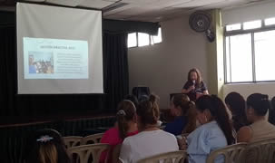
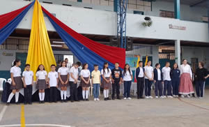
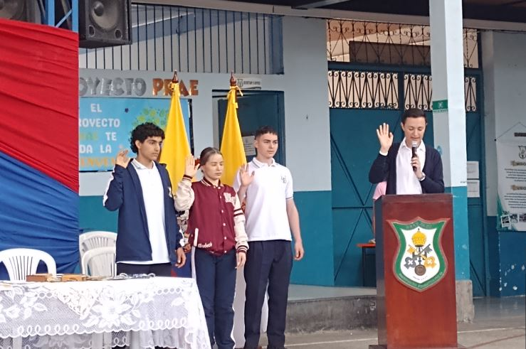

Marzo 2024
Se realiza Rendición de Cuentas
Con el fin de brindar a la comunidad la información referente a las obras que realizó la Institución Educativa durante la vigencia anterior, el día 29 de febrero se llevó a cabo la rendición de cuentas a través de un evento programado en el aula máxima de la Sede Principal. En esta actividad, el Rector y los líderes de gestión presentaron una serie de diapositivas en las que explicaba detalladamente los eventos, los costos, gastos y resultados obtenidos por el Plantel en las líneas administrativa, directiva, académica y comunitaria.
Publicado: 15 de marzo de 2024.
Izada de bandera Primer Periodo Sede Principal
Como parte del trabajo realizado por los docentes del proyecto de Democracia, y en conmemoración del día Internacional de la Mujer, el 8 de marzo se llevó a cabo la izada de bandera correspondiente al primer periodo
Publicado: 15 de marzo de 2024.
Autoridades posesionaron a personero y contralora estudiantil
Dentro de la izada de bandera se abrió un espacio importante para la formalización y legalización de los cargos de representación en el Gobierno Escolar. Mediante acto solemne, el Personero del Municipio, Gustavo Adolfo Gómez, realizó la toma del juramento al Personero Estudiantil Gerónimo Arias, a la Contralora Estudiantil María José Hurtado y al representante de los Estudiantes al Consejo Directivo Esteban Noreña. De igual manera, El Alcalde Municipal y el Rector de la Institución Elkin Mauricio Ávila realizaron la posesión de los demás miembros del Gobierno escolar, como: Consejo Directivo, Consejo academico, Consejo de estudiantes, Consejo de Padres, entre otros.